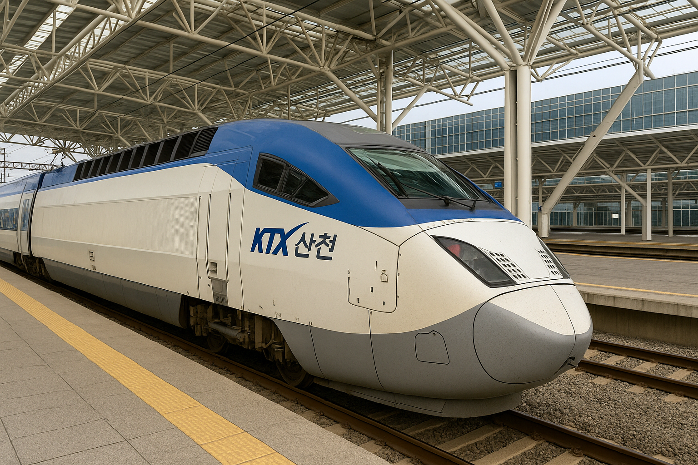

⏰ 출발 05:05 → 도착 05:11
🕓 소요시간: 0시간 6분 | 💰 요금: 8,400원
⏰ 출발 06:03 → 도착 06:09
🕓 소요시간: 0시간 6분 | 💰 요금: 8,400원
⏰ 출발 06:30 → 도착 06:37
🕓 소요시간: 0시간 7분 | 💰 요금: 2,600원
⏰ 출발 06:45 → 도착 06:51
🕓 소요시간: 0시간 6분 | 💰 요금: 7,500원
⏰ 출발 07:20 → 도착 07:27
🕓 소요시간: 0시간 7분 | 💰 요금: 2,600원
⏰ 출발 07:47 → 도착 07:53
🕓 소요시간: 0시간 6분 | 💰 요금: 8,400원
⏰ 출발 08:12 → 도착 08:19
🕓 소요시간: 0시간 7분 | 💰 요금: 4,800원
⏰ 출발 08:41 → 도착 08:47
🕓 소요시간: 0시간 6분 | 💰 요금: 8,400원
⏰ 출발 08:58 → 도착 09:05
🕓 소요시간: 0시간 7분 | 💰 요금: 2,600원
⏰ 출발 10:21 → 도착 10:27
🕓 소요시간: 0시간 6분 | 💰 요금: 8,400원
⏰ 출발 11:08 → 도착 11:15
🕓 소요시간: 0시간 7분 | 💰 요금: 요금 정보 없음
⏰ 출발 11:57 → 도착 12:03
🕓 소요시간: 0시간 6분 | 💰 요금: 8,400원
⏰ 출발 12:15 → 도착 12:22
🕓 소요시간: 0시간 7분 | 💰 요금: 2,600원
⏰ 출발 13:19 → 도착 13:26
🕓 소요시간: 0시간 7분 | 💰 요금: 2,600원
⏰ 출발 14:00 → 도착 14:06
🕓 소요시간: 0시간 6분 | 💰 요금: 8,400원
⏰ 출발 14:10 → 도착 14:17
🕓 소요시간: 0시간 7분 | 💰 요금: 4,800원
⏰ 출발 14:30 → 도착 14:36
🕓 소요시간: 0시간 6분 | 💰 요금: 7,500원
⏰ 출발 14:43 → 도착 14:50
🕓 소요시간: 0시간 7분 | 💰 요금: 2,600원
⏰ 출발 14:56 → 도착 15:02
🕓 소요시간: 0시간 6분 | 💰 요금: 8,400원
⏰ 출발 15:26 → 도착 15:32
🕓 소요시간: 0시간 6분 | 💰 요금: 8,400원
⏰ 출발 15:49 → 도착 15:56
🕓 소요시간: 0시간 7분 | 💰 요금: 요금 정보 없음
⏰ 출발 16:26 → 도착 16:32
🕓 소요시간: 0시간 6분 | 💰 요금: 8,400원
⏰ 출발 16:34 → 도착 16:40
🕓 소요시간: 0시간 6분 | 💰 요금: 8,400원
⏰ 출발 16:45 → 도착 16:52
🕓 소요시간: 0시간 7분 | 💰 요금: 2,600원
⏰ 출발 17:22 → 도착 17:29
🕓 소요시간: 0시간 7분 | 💰 요금: 4,800원
⏰ 출발 18:03 → 도착 18:09
🕓 소요시간: 0시간 6분 | 💰 요금: 8,400원
⏰ 출발 18:12 → 도착 18:19
🕓 소요시간: 0시간 7분 | 💰 요금: 2,600원
⏰ 출발 18:53 → 도착 18:59
🕓 소요시간: 0시간 6분 | 💰 요금: 8,400원
⏰ 출발 19:15 → 도착 19:22
🕓 소요시간: 0시간 7분 | 💰 요금: 2,600원
⏰ 출발 20:22 → 도착 20:28
🕓 소요시간: 0시간 6분 | 💰 요금: 8,400원
⏰ 출발 21:54 → 도착 22:00
🕓 소요시간: 0시간 6분 | 💰 요금: 8,400원
⏰ 출발 22:40 → 도착 22:47
🕓 소요시간: 0시간 7분 | 💰 요금: 2,600원
최초 생성일: 2025-06-12 / 최종 수정일: 2025-06-12